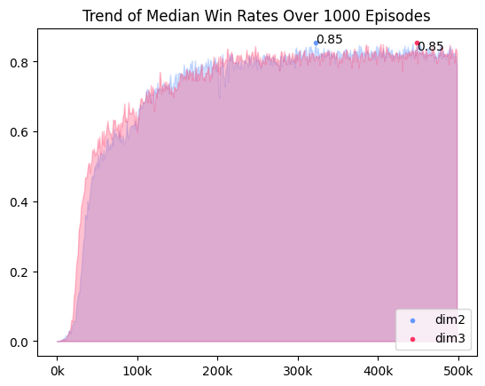

[Minesweeper/01] 환경
01. Environment
State
Single Channel
9*9(easy의 맵 규격)의 arr에 주변부 지뢰의 개수를 센 타일의 수(0-8)를 그대로 반영하고, 아직 까지지 않은 타일을 -1, 지뢰를 -2로 표현했다. 최댓값인 8로 전체 state arr를 나누어 state를 정규화했다. 정규화를 하지 않았을 때엔 학습이 거의 되지 않았지만, 정규화 이후에 승률이 극적으로 상승했다.

Multi Channel
env.dim2 클래스 파라미터에서 False값을 주면 다차원 state를 이용할 수 있다. 다차원 state는 단일 차원 state에서 지뢰(-2), 까짐 여부(-1), 주변 지뢰 개수의 합을 각각의 채널로 받고, 원핫인코딩으로 값을 표현한다.

타입별 학습
 |
 |
초반 학습에서는 다차원 state를 사용할 때 승률이 더 빠르게 올랐다. 하지만 10만 이후부터는 state 표현 차이로 인한 승률 차이는 거의 없었다.
Reward Design
| Reward | Description & Purpose | Weight | Done |
|---|---|---|---|
| Win | 지뢰가 아닌 모든 타일을 깐 경우 | 1 | True |
| Lose | 깐 타일이 지뢰인 경우 | -1 | True |
| Progress | 주변부에 까진 타일이 있고, 지뢰가 아닌 타일을 깐 경우 | 0.3 | False |
| Guess | 주변부가 까져 있지 않지만, 지뢰가 아닌 타일을 깐 경우 | -0.3 ~ 0.3 | False |
| No Progress | 이미 누른 타일을 또 누른 경우 | -0.5 / -1 | T/F |
- 보상 디자인의 변화는 Ch.04 Troulbe Shooting 에서 확인할 수 있다.
속도 개선
n0만 번 단위로 에피소드를 진행하다보니, 환경 코드의 시간 효율이 중요했다. 시간 효율을 높이기 위해 0을 눌렀을 때 연쇄로 터지는 코드, 주변 지뢰의 개수를 세는 코드를 리팩토링했다.
1. 0을 눌렀을 때 주변 타일이 까지는 현상
기존 코드는 재귀형으로 구현했지만, 무한 루프에 빠지는 문제가 있었다. 무한 루프 문제를 해결하고 속도를 향상시키기 위해서 BFS 알고리즘을 이용해 코드를 수정했다.
2. 주변 지뢰 개수 세기 로직
기존 코드는 특정 타일을 기준으로 주변 타일을 탐색하는 방식을 이중 for문으로 구현했다. for문을 사용을 최소화 하고자, 겉에 0 패딩을 두른 후 3*3로 arr를 순서대로 탐색하며 M의 개수를 세는 방식으로 코드를 수정했다.
3. cython
-> 추가할 예정